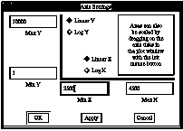

Each plot window described in the previous sections allows you to pop up a menu to change the default settings used to display the plot. In addition, the plot settings menu allows printing, writing a PostScript file of the plot, and closing the plot. To bring up the plot settings menu, make sure the plot is selected (using the first or select mouse button) and then press the right-most mouse button. The plot settings menu is used just like the other pull-down menus throughout Histo-Scope, except that you are using the right-most button instead of the left mouse button for selecting items in the menu.
The plot settings menu for each plot includes on-line help that describes each plot setting.
You can get statistics on the data used in each plot type. Each statistics window includes the name of the data item, the number of fills (for histograms) or entries (for Ntuples), the Sum of all the Fills (for histograms only), the mean, standard deviation, minimum, and maximum for each variable, and overflow sums (for histograms only).
Figure 38a. Figure 38b.
Example Statistics Window 2D Histogram Overflows
One-dimensional histograms have only two overflows: -X and +X.
If the statistics window for a plot is displayed at the same time the user requests a plot to be printed, the statistics are printed to the side of the plot (except for Multiple Plot Windows).
Time Series, XY, and Histogram plots allow you to place markers on the plots to indicate the actual data points on the lines drawn in the plots. In addition, they allow you to set line styles for each variable in the plot.
When you select Set Mark and Line Style... from the plot setting menu, one of the following windows pop up:
Figure 39a. Histograms Styles Window
Figure 39b. Mark & Line Styles Window
The Histograms style window contains four pull-down menus; the Mark & Line Styles window contains five. The first two menu boxes are for lines, style and color. When you click on the first menu box, all possible line styles are displayed. Click and drag the mouse to select the line style you desire. As you select a new style, the line to the right of the option menu boxes changes accordingly so you can see what your line will look like. In the Histograms window, at the bottom of the lines styles options, there will be markers displayed. If selected the histogram will be plotted with markers with or without error bars depending on whether errors were previously selected. The second menu box allows you to select a color for the line.
In the Histograms Styles window, the next two menu boxes are for histogram fill style and color. They work the same way as the line syle and color menu boxes Click and drag the mouse to select the histogram fill style and color you desire.
In the Mark & Line Styles Window, the second group of menu boxes allow you to select the marker characteristics: type, size and color. These menu boxes work in the usual way as well. The variable names are listed at the top right of the window in both Histograms and Mark & Line Styles Windows.
The six push buttons in the middle of the Mark & Lines Styles Window allow you to clear the marker type and line style or set the styles to a default. In order for these changes to take effect, press the Apply or OK button. The Mark Size button pops up a window which allows you to set all markers to the same size. The LineColors button pops up a window which allows you to change the marker colors.
To see how the plot will look with the assignments you've made, click on the Apply button. The OK button will make the assignments and dismiss the window. The Dismiss button will cancel your selection and dismiss the window.
By default, the variables legend in Time Series and XY plots is displayed. To make the legend disappear, select Show Variables Legend from the Plot Settings menu. To make it reappear, select Show Variables Legend once again.
Slider variables can be defined for many kinds of plots from Ntuple data. Slider variables are used to study correlations among variables in the Ntuple. They allow the user to make simple cuts in the Ntuple sample. From the Ntuple Window, assign these variables to the positions S1, S2, S3... Then select Show Sliders from the Plot Settings menu. A window similar to Figure 40 will pop up.
By default, each slider is set up so that all points are included and the radio button shows that all values less than (<) the value displayed are included in the plot. As you move the slider to the left, entries will be eliminated that are associated in the Ntuple with values greater than the displayed value of the slider variable. As you move the sliders, scatter plots lose/add points and histograms lose/add height.
Figure 40. Animation Sliders Window
(shown larger than actual size)
When the radio button for greater than (>) is selected, the opposite is true: all values greater than the value displayed are included in the plot and values less than are excluded. Thus it is possible by selecting the same Ntuple variable twice to achieve a range of values for the cut. For example in Figure 40, all points are displayed where the variable Y is between 4779.5 and 5245.1.
In addition to dragging the slider with the mouse, you can click on the space to the left or right of the slider to move it in pre-defined increments. For smaller increment adjustments you can use the left and right arrow keys. Typing a tab will allow you to select which slider is affected when using the arrow keys.
To re-bin histograms displayed from Ntuple data, or to find out the number of bins Histo-Scope used to display the Ntuple, select Show Rebin Sliders from the Plot Settings menu. A window similar to Figure 41 will pop up.
To adjust the slider to the exact number of bins you desire, use the left and right arrow keys. For two-dimensional histograms with two sliders, you may need to tab to the slider you want to change. You can also drag the slider with the mouse or click on the space to the left or right of the slider for larger adjustments.
Figure 41. Rebin Histogram Window
(shown larger than actual size)
To set the bin splitting threshold for adaptive histograms displayed from Ntuple data, or to find out its current value, select Show Bin Limit Sliders from the Plot Settings menu. A window similar to the following will pop up:
Figure 42. Bin Limits Window
(shown larger than actual size)
To adjust the slider to a new threshold value, use the left and right arrow keys. (Use the tab key to select the slider you want to change for two-dimensional histograms if the slider you want to change isn't selected.) You can also drag the slider with the mouse or click on the space to the left or right of the slider.
Histogram axes can optionally be numbered using the exact values of the bin edges rather than the ordinary plot scale. To change the labeling style, select Label at Bin Edges from the Plot Settings menu. When the bins are very narrow, the plot reverts to the ordinary axis labeling scheme regardless of the setting of this option.
To alter the cell size and density of data displayed from a Cell Plot, select Show Normalization Slider from the Plot Settings menu. A window similar to Figure 43 will pop up. The size of a rectangle in a cell plot is proportional to the contents of the bin it represents. The maximum cell size (filled in black) represents a value greater than or equal to the right (maximum value on the Normalization Slider window. An empty cell represents a bin value less than or equal to the left (minimum) value on the Normalization Slider window.
Figure 43. Normalization Slider
Initially, the normalization slider shows the entire range of the bin values and therefore displays the entire range of the data. The number displayed in the right side of the slider instructs Histo-Scope to display everything from that value up to the maximum value to be displayed at the maximum cell size. (Similarly, the number displayed in the left side of the slider instructs Histo-Scope to eliminate displaying everything from that value to the minimum value on the plot.) The data between the two sliders is displayed with cell size proportional (linear scaling) to the bin contents within the range of the normalization minimum and maximum. If the toggle-button is set to Log. Scaling , the cell is logarithmically proportional to the bin contents within the range.
To adjust the slider drag the arrow slide you want to change with the mouse in the direction you desire.
The Other Views plot setting is available from two-dimensional histogram plots and cell plots requested as another view of two-dimensional plots. When selecting Other Views from a two-dimensional histogram, a 2D Cell Plot is popped up (and vice versa).
There are three different ways to scale a plot after it is displayed:
* Use the mouse directly on the plot to grab the axis ticks and pull (or stretch) the axis. Point the mouse just to the outside of the axis using a point near the upper half of the axis to change the maximum axis value and a point near the lower half of the axis to change the minimum axis value.
* Use:
Zoom In (Ctrl Z)from the Plot Settings menu. Zoom In and Zoom Out will immediately change the plot. Reset View will restore the plot to its initial orientation and scale with all its data displayed.Zoom Out (Shift Ctrl Z)
Reset View (Ctrl R)
*Use the Axis Settings window by selecting Axis Settings... from the Plot Settings menu. This menu allows you to enter values for the minimum and maximum value of each axis. In addition, you can change the scaling of an axis from linear to logarithmic (and back) using the diamond-shaped radio buttons.

All plots can be panned by grabbing a point inside the plot and dragging with the mouse. On 2D Histograms, you must grab a point near the axes and drag along the axis.
By default, the backplanes of 2D Histograms are displayed. To make the backplanes disappear, select Show Backplanes from the Plot Settings menu. To make them reappear, select Show Backplanes once again.
By default, error data in a histogram is not displayed. If error data is available for the plot, selecting Error Data from the Plot Settings menu will show error bars using the error data from the file or process. Selecting Error Data once again, (or selecting Gaussian Errors) from the Plot Settings menu will de-select Error Data.
Selecting Gaussian Errors from the Plot Settings menu will create error bars for the histogram showing the square root of the bin contents. These errors are computed by Histo-Scope and thus do not incur communications overhead when connected to a process.
Figure 45. Histogram with Gaussian Errors
By default, the points in a scatter plot are drawn as thick points. To make the plot lighter, select Thicken Points from the Plot Settings menu to lighten the points. To make the points thick again, select Thicken Points once again.
Automatic Update and Update from the Plot Settings menu are useful only when connected to a running process. These two update settings affect when data is re-displayed. (The Main Window's Preferences menu is used to set the Update Frequency, which affects how often data is requested from the running process.)
Initially Automatic Update mode is on (indicated by the square toggle button to the left in the menu). When Histo-Scope is connected to a running process, each displayed plot with Automatic Update mode set on will be updated according to the frequency set in the Preferences menu in the Main Window (initially every 3 seconds).
With Automatic Update off, a plot can still be individually updated with data Histo-Scope has already received from the client by selecting Update from the Plot Settings menu.
Select Print... from the Plot Settings menu to print the plot. Histo-Scope will pop up a Printer Options window for specifying the printer queue name:
Figure 46. Printer Options Window
The default queue names initially displayed are the environment variables defined, if any, for lpr and flpr. If no such defaults are available, the menu displays the system default queue.
The last field in this dialog is the Unix command that will be used to queue the plot for printing. Since this command is generated from the other options in the dialog, there is normally no reason to change it, but you can use the field to add options and change the command in ways not otherwise supported by the print dialog.
Enter the queue name if the default queue is not the printer you would like to use. Press Print to print the file.
Pressing Cancel will make the Printer Options window disappear without printing anything.
If the statistics window for a plot is displayed while printing a plot, the statistics will also be printed to the side of the plot.
If the plot window to be printed is a Multiple Plot window, all mini-plots in the window will appear on a single page similar in appearance to how they appear on the screen. If titles are displayed in the Multi-Plot window, they will also be printed. For Multi-Plot windows, statistics are not printed. If you find that the multiple plot window is larger than the size of the paper you are using to print the window, try reducing the size of the Multiple Plot window and reprinting or use a POSTSCRIPT printer that can accomodate larger paper.
Please note that 2D Histogram plots can take some time to print because of PostScript processing time in the printer. As the number of bins goes up, print processing time increases so that histograms of 100x100 bins can take over nine minutes for the printer to process and print the file (depending on the speed of the printer).
Select Generate PostScript... if you would like to save a PostScript representation of your plot to a file. Histo-Scope will pop-up a file selection dialog for you to enter a filename for the PostScript output. In Histo-Scope Version 3.0, we have encapsulated PostScript output so that this file can be pasted into other documents.
By default, a slider showing the minimum and maximum values defined for an indicator or control are displayed. To omit these from the window, select Show Range from the plot settings menu. The filled square to the left of the Show Range will disappear, indicating that showing the range is disabled. To enable Show Range, just select it once again.
Select Delete MiniPlot from the Plot Settings menu to delete the mini-plot from the Multiple Plot window. The remainder of the Multi-Plot window is unaffected. After a mini-plot is deleted, it is possile to drag another plot into that empty "cell" so that it is displayed in the Multi-Plot window.
Select Change Window Title from the Plot Settings menu if you would like to change the title of the plot window A new window will pop up which will allow you to enter a new window title. After you have entered a desired new title, click on the OK button. If you wish to cancel this selection, there is a Cancel button to click on.
Select Remove Overlayed Plot from the Plot Settings menu to remove a plot which you have overlayed on another plot in the current plot window After you select Remove Overlayed Plot..., there will be a list of plots that are currently overlayed in that window. You may then drag the mouse to select the plot you wish to remove.
Select Close from the Plot Settings menu to close the plot window and make it disappear. It is a good idea to close plots that are no longer needed when connected to a process to avoid the CPU overhead of transferring and displaying data.